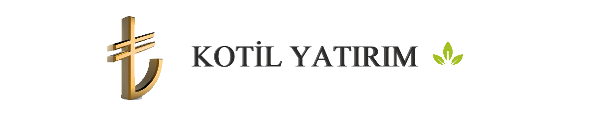

Hakkımızda
Kısaca KOTİL Yatırım
Biz Kimiz?BÜTÜN YOLCULUKLAR TEK BİR ADIMLA BAŞLAR…. Kotil Yatırım olarak 2025 yılında Türkiye’nin önde gelen banka ve yatırım kuruluşlarında yatırım bankacılığının çeşitli alanlarında biriktirdiğimiz bilgi ve tecrübeden oluşan sermayemizi ortaya koyarak yola çıktık. Hedefimiz, kurduğumuz hizmet ve ürün altyapısı ile müşterilerimize doğru ve kaliteli hizmeti sunmaktır. Geçen süre boyunca ürün ve hizmet yapımızı güçlendirerek büyümeye devam ediyoruz. Sermaye yapımızı ve finansal verilerimizi, hizmet veren personelimizi, ürün ve standartlarımızı sürekli geliştiriyor, en iyisini yapmayı hedefliyoruz.